Osama Bin Bom'in, Steve from Minecraft, Quagmire
6 stops, in the order they happened. Scroll to fly.
Every group's route through the MASTER FILE, from a camera's point of view · 8 routes, 98 stops
Pick a group and scroll. The camera flies from system to planet, drops to wherever that group is, and walks the hallways where the book goes indoors, while the words beside it tell what happened there. The order is the order things happened; you can switch to the order the book tells them. There are no people in it: it is only ever a camera's point of view.
Where things are is invented. The MASTER FILE says what is inside what and nothing about distances or directions, so the shapes of places and the roads between them are this page's guess, the same way the Maps are.
This browser can't draw the 3D, so here is the walkthrough as words and pictures.
Osama Bin Bom'in, Steve from Minecraft, Quagmire
6 stops, in the order they happened. Scroll to fly.
The Projects region

Steve from Minecraft and Quagmire travel to the famed city of the Projects to meet Osama Bin Bom'in and coordinate their attack. Their guide is MF Vroom, a long-lost relative of the Projects' royal family, keen on returning to the top.
Told in Chapter 2, line 333 · Article: Steve from Minecraft · On the Timeline
I-38 West poi
At the heart of the Projects, the city of I-38 West, Osama sends MF Vroom into exile, to forever get yelled at in COD lobbies. MF Vroom is never seen again. (He is seen again.)
Leaves MF Vroom is exiled to the COD lobbies line 338
Told in Chapter 2, line 338 · Article: Call of Duty Lobbies · On the Timeline
The Projects region

Osama, Steve and Quagmire agree to level Moscow to shut McDonald's up and let DQ win already. The Toyota Corolla for the initial bombing run is Lightning McQueen, a Chick-fil-A loyalist and a knight of 4chan. His way out: Tyler from Uber.
Told in Chapter 2, line 342 · Article: Keepers of the MySpace Relics · On the Timeline
The Projects region

Leaving the Projects, Osama is ambushed by QXC and Jinxy. Not knowing who they are, he ignores the mustard gas and leaves without injury.
Told in Chapter 2, line 355 · Article: QXC · On the Timeline
Moscow (Italian City) region
The attack leaves Lightning McQueen “blasted”. Instead of leaving with Tyler from Uber, he moves in with George Constanta.
Told in Chapter 2, line 357 · Article: The Attack on Moscow · On the Timeline

A faint blue glow in one of the giant defensive processing facilities. Plankton, out of instinct from the Fortnite Island Wars, starts chanting. Then a giant robotic roar is heard from horizon to horizon. Osama does not want them here.
“Hey uh guys, did ninja aka Tyler Blevins join this Fortnite lobby.”
Told in Chapter 4+.1+.1…, line 1211 · Article: TON 618 · On the Timeline
Last seen in Chapter 4+.1+.1…, line 1211: TON 618 wakes up
RFK, Plankton, Ioannus Paranukus, MF Vroom, Son S. Sonionring
22 stops, in the order they happened. Scroll to fly.
I-38 West poi
At the heart of the Projects, the city of I-38 West, Osama sends MF Vroom into exile, to forever get yelled at in COD lobbies. MF Vroom is never seen again. (He is seen again.)
Told in Chapter 2, line 338 · Article: Call of Duty Lobbies · On the Timeline
Bon Jovi takes the Galactic Senate on the planet of Patrick in the Uniontown system. The battle is long and hard, but he pushes out all of the 80-year-old senators. One remains: a Dark Knight named RFK.
Told in Chapter 2, line 363 · Article: The Siege of the Galactic Senate · On the Timeline
Still at The Galactic Senate heard from elsewhere

RFK only remembers it after the Senate is over. In the book it comes a chapter later; on the Timeline it goes where it happened.
Told in Chapter Triangle, line 418 · Article: Lil Uzi Vert · On the Timeline
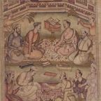
Bon Jovi looks around and proclaims “Nuh Uh”. “Yuh huh.” “Nuh Uh.” “Nuh Uh.” “Yuh huh.” This continues for the rest of Chapter 2.
“It’s over Bon Jovi I have 4 Red Bulls and a lightsaber, no one can mess with me I’m cool”
Told in Chapter 2, line 367 · Article: The Great Nuh Uh–Yuh Huh Debate · On the Timeline

RFK stands on the Senate floor and ponders his existence. Then he decides he has had enough, and leaves.
“why is RFK how is RFK, many are not pog like RFK”
Told in Chapter Triangle, line 415 · Article: Bon Jovi · On the Timeline
Chai Town region

Walking the streets of Chai Town with a G Fuel, RFK is approached by Plankton (no last name, he's an orphan), who knows all about RFK's cool sad backstory and the lost society of ballers.
“His Name…. Is Chris: All balled up Deluxe Edition.”
Joins Plankton meets RFK: the New Crips are born line 420
Told in Chapter Triangle, line 420 · Article: Plankton · On the Timeline
Still at Chai Town heard from elsewhere
Plankton is getting traces of Chris in the Reformed Travis Scott Sector, buying a McDouble on one of its planets. The only one who can battle him has met the tech bros and downloaded the sacred social media apps onto a Nokia I-4500 flip phone with the 3 year contract plan from Verizon.
Told in Chapter Triangle, line 440 · Article: The Reformed Travis Scott Sector · On the Timeline
Chai Town region

RFK considers Mark Zuckerberg (his baller finger was just chill like that), then decides they're gonna enlist MF Vroom instead: restore him to power in the Projects and harness the power of the gang army. Vroom is at Call of Duty HQ, deep in the heart of Dunder Mifflin.
“Aight Bet”
Told in Chapter Triangle, line 454 · Article: The New Crips · On the Timeline
After a month-long trip in their underpowered Mercedes Benz System Cruiser, boosted 40% by galaxy gas from Litl Wayne, they reach a galaxy encapsulated in a giant Dunder Mifflin office building, guarded by Google Smart guards. They slip in behind the sign.
“Dear god.. its huge there’s so much.. paper..”
Told in Chapter the Fourth, line 609 · Article: Dunder Mifflin (Galaxy) · On the Timeline
The Vending Machine Labyrinth poi
The ship finds Call of Duty in the lobby file cabinet: aisle 3 of the vending machine section. It flies through the crack in the door of the machine, into the Labyrinth, and lands at COD HQ in a very dark heavy storm.
Told in Dunder Mifflan, line 645 · Article: The Vending Machine Labyrinth · On the Timeline
Call of Duty HQ poi

A man smashes through the extremely OpenAble Door: Ioann-ius Nukian, Jedi master and dealer of justice. He is of the Projects, and wishes to free his king. The party of three ventures into COD HQ.
“I Am Ioann-ius Nukian Jedi master and dealer of justice (I sell per gram, $40 a gram)”
Joins Ioannus Paranukus joins line 665
Told in Dunder Mifflan, line 665 · Article: Ioannus Paranukus · On the Timeline
Inside is madness: Pokémon everywhere, gamers yelled at for not capping red, Xbox 360s red-ringing in the middle of COD tournaments. Ioannus jumps into the battle with his white lightsaber and disappears into the red mist. RFK and Plankton run for the 360 chambers.
Told in Dunder Mifflan, line 683 · Article: The Xbox Live Dungeons · On the Timeline
The 360 Chambers poi
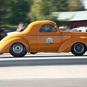
In the silent 360 chambers, lined with pipes of Mountain Dew, Ioannus draws his lightsaber, RFK his hantavirus vaccine, Plankton his metal folding chair. From the shadows leaps a car wearing a robe. It is MF Vroom, who escaped the COD lobbies and has been lost in the hallways for days.
“Bruh just leave”
Told in Chapter 4+.1+.1…, line 1069 · Article: MF Vroom · On the Timeline
The 360 Chambers poi
A door appears, smothered in Dorito dust and Mountain Dew oil. Outside it is raining Pepsi and Dew. They find the System Cruiser, unweathered, and take off. They never do find the USB port.
“Obama care did not reach this door”
Joins MF Vroom is found in the 360 chambers line 1087
Told in Chapter 4+.1+.1…, line 1089 · Article: Mercedes Benz System Cruiser · On the Timeline
Still at The 360 Chambers heard from elsewhere

On the way to the Projects, MF Vroom's Windows phone rings (Peter Griffin singing some choir something). It's Spamton, who wants intergalactic road kill for a new recipe Grogu told him about, and says to pop up to Cyber City.
“pop up to [CYBERR1!! C1TYY!!] When you get there chance”
Told in Chapter 4+.1+.1…, line 1120 · Article: Spamton G. Spamton · On the Timeline
Adirondack Park region
A goose on the windshield, leaves on the wings, and the brisk breeze of a New York morning over Adirondack Park. A slow turn at Mach 3 lines them up with the Projects national spaceport.
Told in Chapter 4+.1+.1…, line 1142 · Article: Adirondack Park · On the Timeline
The Projects National Spaceport poi

Tung Tung Tung Sahur, Osama's ambassador, moves to arrest MF Vroom. A dark figure from the janitorial staff cocks a modded colonial musket and shoots Triple T through his wooden body. It is Son, Vroom's right-hand man, back from hiding.
“GG fricken easy”
Told in Chapter 4+.1+.1…, line 1151 · Article: Son S. Sonionring · On the Timeline
The Projects National Spaceport poi
Straight through spaceport security, muskets firing, lightsabers slicing. In Son's 2005 Honda Accord, chased by police Kirks who transform into police cars, a machine gun from the trunk fires solidified purple juice and pops every tire, to “I Can't Put Down the Cup”.
Joins Son S. Sonionring shoots Tung Tung Tung Sahur and joins line 1166
Told in Chapter 4+.1+.1…, line 1174 · Article: The Spaceport Breakout & O'Block Chase · On the Timeline
A faint blue glow in one of the giant defensive processing facilities. Plankton, out of instinct from the Fortnite Island Wars, starts chanting. Then a giant robotic roar is heard from horizon to horizon. Osama does not want them here.
“Hey uh guys, did ninja aka Tyler Blevins join this Fortnite lobby.”
Told in Chapter 4+.1+.1…, line 1211 · Article: TON 618 · On the Timeline
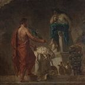
MF Vroom tells them the Prophecy: one whose phone holds MySpace v1.3.3, Snapchat: Ghost Protocol Edition, Facebook (Pre-Cringe), Twitter Bluebird Variant, Apple Podcasts 2, Settings (Full access) and the 3 year contract plan from Verizon will beat Chris on the court, their team filled with DETERMINATION.
“and Chris will fall, but only if despite everything, on the court, its still you.”
Told in Chapter 4+.1+.1…, line 1229 · Article: The Prophecy · On the Timeline
They can't take back the Projects with TON 618 hunting them, but they could just get Facebook (Pre-Cringe) from the palace. It's chicken hour, so the guards won't be looking. The skies turn orange, and their course is set.
“Aight bet”
Told in Chapter 4+.1+.1…, line 1247 · Article: Chicken Hour · On the Timeline
Still at O'Block (O Block 2) heard from elsewhere
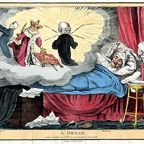
Somewhere, Plankton wakes to Ioannus Paranukus's voice in his ear. On the iNav, Kanye has dreamt that Travis Scott wanted squad wins for the boys.
“Felt like a victory royal in Fortnite season 2.”
Told in Chapter Number New Jersey, line 1446 · Article: Kanye's Dream · On the Timeline
Last seen in Chapter Number New Jersey, line 1446: Kanye wakes up on the iNav
The New Crips and the New Apple Employees are both after Chris, but they haven't met. The Prophecy's phone needs the 3 year contract plan from Verizon (the New Apple Employees have it), Facebook (Pre-Cringe) (the New Crips are going for it) and Snapchat: Ghost Protocol (five nights at Freddy's away; the New Apple Employees are on Night 1). Walter and Jesse are cooking in Scott the Woz's basement. Chris “already has his foothold” in the New Jersey system.
And Chris? The Reformed Travis Scott Sector (last trace). Buying a McDouble from one of its planets and taking balling all for himself. Nobody has seen him since the 2007/2008 housing crash.
Lightning McQueen, Agent 007, Mr. Bean
6 stops, in the order they happened. Scroll to fly.
The Projects region
Osama, Steve and Quagmire agree to level Moscow to shut McDonald's up and let DQ win already. The Toyota Corolla for the initial bombing run is Lightning McQueen, a Chick-fil-A loyalist and a knight of 4chan. His way out: Tyler from Uber.
Told in Chapter 2, line 342 · Article: Keepers of the MySpace Relics · On the Timeline
Moscow (Italian City) region
The attack leaves Lightning McQueen “blasted”. Instead of leaving with Tyler from Uber, he moves in with George Constanta.
Told in Chapter 2, line 357 · Article: The Attack on Moscow · On the Timeline
England region

Sick of George Constanta, Lightning McQueen flies from the Soviet Union to England to meet his contacts from Parliament. A pager from a stranger tells him to hoard smoke detectors for “special reasons”. England has reached a new level of Roman.
Told in Chapter Triangle, line 471 · Article: Lightning McQueen · On the Timeline

At the smoke and vape shop, Mr. Bean briefs McQueen while Agent 007 hits a fat vape in the telephone booth. The mission: take Constantinople from the Barack Empire and restore Bernie Sanders. The plan: nukes, flood the city with oil, lure Obama (holder of the 7 chaos emeralds) to the centre, then 6.8 seconds to escape through a wormhole that theoretically could open.
“McQueen.. Ive heard stories about your work in Moscow I think your a Dope pick for the mission”
Joins Mr. Bean and Agent 007 meet McQueen: the Goober Gang forms line 483
Told in Chapter Triangle, line 483 · Article: The Goober Gang · On the Timeline
Popeyes poi
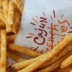
Mr. Bean and 007 hide the first two nukes in bags of old pagers. 007 loses his torso (he could be fine), and Putin lectures Bean about mental illness. McQueen plants the third at the abandoned Walmarts, declining the local mafia's request to be part of society, and the fourth at a Walmart that is now a Popeyes, after ordering at gunpoint.
“Can I get two number 9s, a number 9 large a number 6 with extra DIEP a number 7 two number 45’s, one with cheese, and a large soda”
Told in Chapter the Fourth, line 555 · Article: Popeyes · On the Timeline
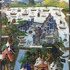
McQueen picks up Bean and 007 at 8aller Jump Street. They fly past DaBaby, vaporized in a suspended animation cell, and into the wormhole. Constantinople falls at 14:74pm Unc Standard Time, and that is the last anyone hears from the Goober Gang. For now.
Told in Chapter the Fourth, line 580 · Article: The Fall of Constantinople · On the Timeline
Last seen in Chapter the Fourth, line 580: The Fall of Constantinople
Kanye West, ChatGPT, Steve Jobs
8 stops, in the order they happened. Scroll to fly.
The United Streets of Ohio region
Their Twitter account doesn't have 100 followers yet, so the only way to get the ingredients from Kanye is to break into his house and weeze him. They do. The propane is watered down.
“This isn’t over kanye”
Told in Chapter the Fourth, line 541 · Article: The Weezing of Kanye · On the Timeline

In the United Streets of Ohio, Kanye and ChatGPT find a corner store that sells potato chips for 2.85 a gallon, where all the crips will buy their gas. Kanye plans a song to promote his new propane brand, Ye the Gas.
“Of course sir, anyone will buy your product for your are baller”
Told in Chapter the Fourth, line 594 · Article: Ye the Gas · On the Timeline
Gotham City region
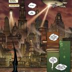
Kanye parks the Prius of Destiny next to Ye Olde Bin in Gotham City. FS Martin Genius, App Whisperer, hands them a USB stick labelled ‘Zuck Tears (Do Not Install)’, tells them to run it on stage, and vapes into a drain.
“Sir, statistically 98.7% of Gotham is built from darkness, broken dreams, and Tim Burton's college notebooks.”
Told in Dunder Mifflan, line 695 · Article: Gotham City · On the Timeline
Gotham City region

Drake Batman, in Ugg boots, has been watching Kanye on the Ring camera. The Joker, Lil Jokez, has started a SoundCloud, and his mixtape Laugh.exe is infecting Gotham's infrastructure through Bluetooth-enabled gargoyles.
“Gotham needs your help. The Joker’s started a SoundCloud.”
Told in Dunder Mifflan, line 718 · Article: Drake Batman · On the Timeline
Club Shadowban poi
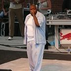
At Club Shadowban, beneath a giant Twitter X suspended by Elon's tears, Kanye and ChatGPT drop their mixtape, 808s and Apocalypses. Lil Jokez morphs into a 2007 JPEG of Heath Ledger, and Drake Batman tackles him into a meme portal. The mixtape has dropped.
“I’m Ye the Gas, no watered-down trash, My bars melt steel beams, while you still DoorDash.”
Told in Dunder Mifflan, line 727 · Article: The Battle of Club Shadowban · On the Timeline
Gotham City region

Across all multiverses a wormhole opens. Out of it flies a glowing sideways iPhone 3G, with Steve Jobs standing on top. He lifts it like Mufasa presenting Simba, and apps begin downloading themselves onto flip phones across the cosmos. The Shadow Realm weeps.
“One more thing… Let’s end this.”
Joins Steve Jobs arrives and joins Kanye and ChatGPT line 742
Told in Dunder Mifflan, line 742 · Article: Steve Jobs · On the Timeline
The Shadow Realm universe

Everybody else has vanished. The club looks abandoned for years, with only the outlines of everybody's feet left in the dust. Something happened with that USB drive. Steve asks Siri to locate the Inav.
“Honestly this is not pogchamp lets be real”
Told in The Flashback Chapter, line 795 · Article: The Shadow Realm · On the Timeline
From Chapter the Maybe Seventh on, this group is part of The New Apple Employees.
Hank Hill, Jesse Pinkman, Walter White
8 stops, in the order they happened. Scroll to fly.
The Department of Defense, an army divided by Jeff Bezosi and Mark Zucc, corners Hank Hill atop the twelve towers in the Kanye system over his Propane empire. They already have Snoopy McSpookintosh in custody.
“If I were you id be counting my lucky stars because the wrath of Jesse and white be upon ye”
Told in Chapter the Fourth, line 523 · Article: The Twelve Towers · On the Timeline
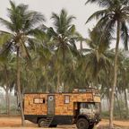
BOOM. The drug van from Breaking Bad drops out of hyperspace next to Hank. Floods of blue dust fall on the DOD, who flee in fear of being a Goober. Jesse and White pick Hank up, and the goobers are gone.
Told in Chapter the Fourth, line 534 · Article: The Crack Van (RV of Time) · On the Timeline
The Kanye System system
Their Twitter account doesn't have 100 followers yet, so the only way to get the ingredients from Kanye is to break into his house and weeze him. They do. The propane is watered down.
“This isn’t over kanye”
Told in Chapter the Fourth, line 541 · Article: The Weezing of Kanye · On the Timeline
In the United Streets of Ohio, Kanye and ChatGPT find a corner store that sells potato chips for 2.85 a gallon, where all the crips will buy their gas. Kanye plans a song to promote his new propane brand, Ye the Gas.
“Of course sir, anyone will buy your product for your are baller”
Told in Chapter the Fourth, line 594 · Article: Ye the Gas · On the Timeline
Dusty Depot region
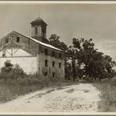
The RV of time is damaged, and the oil has run out. Jesse goes through a port-a-potty to the Quick-Check for Doritos and hears about an oil casino nearby. Hank has some mysterious apes on his bitcoin wallet. Walter dreams of a Mountain Dew refinery and restaurant called Erger Wings.
“Gosh dang it Jesse boy, we ran out of propane”
Told in The Flashback Chapter, line 842 · Article: Dusty Depot · On the Timeline
The 6 7 Casino poi
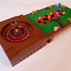
Through the port-a-potty portal and into the 6 7 Casino. After a marathon to the roulette room, and an entire 4 minutes, they have a bet in. It is a heart-wrenching experience, but they prevail.
“Several NFTs on red!”
Told in The Flashback Chapter, line 857 · Article: The Great Roulette Bet · On the Timeline

The ball is stopped by a large robot with a giant TV for a body: Microsoft Bing. A group that includes his son intends to steal the casino's ancient relic, which creates a field of gambling around any building. The price for guarding it: 15 gallons of his finest Prime US Oil. Then down the stairway to heaven.
Told in The Flashback Chapter, line 870 · Article: Microsoft Bing · On the Timeline
The Vault poi

The relic is the 3 year contract plan from Verizon for unlimited talk and text, recovered from the ruins of the LA Walmart. The gang lights a fire in front of the vault door, slams their Red Bulls and nods off, in no fear, since their scars are gold.
Told in The Flashback Chapter, line 889 · Article: The 3 Year Contract Plan from Verizon for Unlimited Talk and Text · On the Timeline
From Chapter the Maybe Seventh on, this group is part of The New Apple Employees.
Kanye, ChatGPT, Steve Jobs, Hank (and Jesse and Walter until Chapter 4+.1…)
26 stops, in the order they happened. Scroll to fly.
The 6 7 Casino poi

The boys sneak out of the Inav blasting Yuno Miles in their Earpods Pro .5's. ChatGPT plugs into Steve's iPhone and turns on the ultra mega uber cool FaceTime laser, which cuts an entrance into the pale beige brick of the casino wall.
Told in Chapter the Maybe Seventh, line 931 · Article: The Casino Heist · On the Timeline
The 6 7 Casino poi

In the lower chambers, Kanye opens a door onto 3–4 Charlie Kirks, trained warriors defending the gift card. Steve Jobs leaps onto the first with his Igun. The others take out their T1 phones and open Truth Social. Alarms start to blare.
“Alright boys, its time to count gang violence.”
Told in Chapter the Maybe Seventh, line 955 · Article: Charlie Kirks · On the Timeline
The Vault poi

Steve places an AirTag on the vault door so the Inav can lock on and fire the Ibeam. First an EMP, then DJ Khaled gets a massive low taper fade, then an enormous beam shoots through the building. Inside the vault, glowing with a radiant golden light: the 3 year contract plan from Verizon.
“Hey Siri.. fire the Ibeam.”
Told in Chapter the Maybe Seventh, line 1002 · Article: The Ibeam · On the Timeline
The TurboGrafx 16 Sector sector

Kanye puts the gift card in his Yeezy jacket. They climb into the Inav as Charlie Kirks pour out of the stairwell, the bullets bouncing off its white glassy hull, and teleport to the TurboGrafx 16 Sector.
Told in Chapter the Maybe Seventh, line 1024 · Article: The TurboGrafx 16 Sector · On the Timeline
The TurboGrafx 16 Sector sector

They need to sync with the Flip Phone Covenant, but it uses 5G, and connecting the iPhone to 5G means Elon Mush. The plan: load a social media app first and roll back to 3G right when they're in Chris's face. GPT points out they will have to deal with Elon at the same time as Chris. “So what’s the plan Jawbs?” Steve repeats it, and the answer is that they will be fighting “Elon musk, mush, and the sole nba player of the universe”.
“Load the socials, then went we’re in his face, connect to the covenant and roll back from 5g to…. 3G.”
Told in Chapter the Maybe Seventh, line 1040 · Article: The Flip Phone Covenant · On the Timeline
The TurboGrafx 16 Sector sector

“Hey siri lets delta out of here.” A giant Ultra Hand appears from the abyss and wraps its fingers round the Inav, yanking it through time and space.
“It seems we’re being forcefully taken onto a episode of throats for thought.”
Told in Chapter 4+.1+.1…, line 1275 · Article: The Ultra Hand · On the Timeline
The TurboGrafx 16 Sector sector

Out of breath and in a panic, Scott reports that the Border is changing colour: first black, then “A giant Bezel.” Chris has turned him against Apple products and he cannot play Wii Fit. He offers a ride in his ship. Officer Steelwool, he says, may know where Snapchat is.
“I usually buy apple products but Chris has turned that against me! HOW WILL I PLAY WII FIT!”
Told in Chapter 4+.1+.1…, line 1306 · Article: Scott the Woz · On the Timeline
The Border poi

Scott slams Dick Vitale's Awesome Baby into a Sega Genesis. Spamton NEO is ripped from his strings, a basketball echoes out of the building, and the Border turns blue again to the Scott the Woz motif. The real Spamton remembers nothing.
“SPAMTON NEO got ripped from his strings and a lone SPAMTON rested on the ground.”
Told in Chapter 4+.1+.1…, line 1360 · Article: Spamton NEO · On the Timeline
Last seen in Chapter Number New Jersey, line 1512: Night 1
The New Crips and the New Apple Employees are both after Chris, but they haven't met. The Prophecy's phone needs the 3 year contract plan from Verizon (the New Apple Employees have it), Facebook (Pre-Cringe) (the New Crips are going for it) and Snapchat: Ghost Protocol (five nights at Freddy's away; the New Apple Employees are on Night 1). Walter and Jesse are cooking in Scott the Woz's basement. Chris “already has his foothold” in the New Jersey system.
And Chris? The Reformed Travis Scott Sector (last trace). Buying a McDouble from one of its planets and taking balling all for himself. Nobody has seen him since the 2007/2008 housing crash.
Scott the Woz, Jerry Attricks, Rex Mohs, Jerry Jab; and, since the last chapter, Walter White and Jesse Pinkman
7 stops, in the order they happened. Scroll to fly.
Scott's House poi
Out of breath and in a panic, Scott reports that the Border is changing colour: first black, then “A giant Bezel.” Chris has turned him against Apple products and he cannot play Wii Fit. He offers a ride in his ship. Officer Steelwool, he says, may know where Snapchat is.
“I usually buy apple products but Chris has turned that against me! HOW WILL I PLAY WII FIT!”
Told in Chapter 4+.1+.1…, line 1306 · Article: Scott the Woz · On the Timeline
Scott's House poi

They run past the Target and the GameStop to Scott's house, where a giant box made of Wii games waits in the backyard. Scott phones his gang. Two hours and a trip to Sheetz later, they are aboard the Wii cube.
Told in Chapter 4+.1+.1…, line 1323 · Article: The Wii Cube · On the Timeline
Scott's House poi
Jerry Attricks asks why Kanye West is here. Scott has two 2028 Tesla roadsters on the way from Elon Musk, whom he texts. Soon the border is in view, and the roadsters dock.
“It’s Ye”
Told in Chapter 4+.1+.1…, line 1327 · Article: Tesla 2028 Roadsters · On the Timeline
The Border poi
Inside the Border: darkness, a clank and pulleys, then Spamton NEO. iGrenades are teleported away, Kanye drops bars, Hank and Jesse shoot. Jerry Jab has left his Wii zapper at home, and a Kromer brick knocks Scott flat.
“I AM SECRET BOSS, IN DELTARUNE GAME”
Told in Chapter 4+.1+.1…, line 1342 · Article: The Border Fight · On the Timeline
The Border poi
Scott slams Dick Vitale's Awesome Baby into a Sega Genesis. Spamton NEO is ripped from his strings, a basketball echoes out of the building, and the Border turns blue again to the Scott the Woz motif. The real Spamton remembers nothing.
“SPAMTON NEO got ripped from his strings and a lone SPAMTON rested on the ground.”
Told in Chapter 4+.1+.1…, line 1360 · Article: Spamton NEO · On the Timeline
The Border poi
Scott calls Officer Steelwool, who plays a recorded Night 1 welcome message. Conclusion: Snapchat: Ghost Protocol is in Freddy Fazbear's Pizza.
“Well that solves it, Snapchat: Ghost protcol is in.. Freddy Fazbears Pizza”
Told in Chapter 4+.1+.1…, line 1375 · Article: Freddy Fazbear's Pizza · On the Timeline
Scott's House poi
Walter asks Scott if he can set up shop in his basement. Scott agrees, if Walter plays Wii Sports with Moh on Thursdays. Walter and Jesse fly to Ohio with the Wii box.
“Sounds like a deal yo”
Joins Walter White and Jesse Pinkman come to Ohio with the Wii cube line 1425
Told in Chapter 4+.1+.1…, line 1425 · Article: The Basement Deal · On the Timeline
Last seen in Chapter 4+.1+.1…, line 1425: The Basement Deal
A spin-off set on the planet Garth in the Kanye System, 1995 to 1996, following Vinny, a Boston Burger King cashier. Its full story and wiki are at The Epic of Vinny Wiki.
15 stops, in the order they happened. Scroll to fly.
The Kanye System system

In the Kanye System, TON 618 takes the shape of a giant human, burns bright blue and conquers the whole system. It has ruled it for millions of years, and rests, “waiting to wake again”. The spin-off says this is the same TON 618 as in the MASTER FILE, where Osama builds it as a weapon. It gives no date beyond “millions of years”, so its place among the ancient events is a guess.
Told in The Epic of Vinny, Chapter 1: Beginnings · Article: TON 618's Conquest of the Kanye System · On the Timeline
The Little Saint James Sea region
On Garth, people who lost their jobs to AI come together and banish it to the Little Saint James Sea. It rules the AI Shadow Realm from there. This is told in the spin-off The Epic of Vinny, not in the MASTER FILE.
Told in The Epic of Vinny, Chapter 1: Beginnings · Article: The Banishing of the AI · On the Timeline
The Backrooms poi
On Garth, Vinny B. James, a Burger King cashier in Boston, walks through the freezer wall into the Backrooms, hits the forklift guy, sees a black cat that turns out to be FRIEND, and is carried off by it.
Told in The Epic of Vinny, Chapter 1: Beginnings · Article: Independence Day, 1995 · On the Timeline
The S.S. Vessel poi

Aboard Captain Gaster’s ship, Vinny insults Taking Back Sunday, the Roaring Knight hits him with the BLACK KNIFE, and he goes overboard. After 1 minute 24 seconds underwater, shadows carry him to the AI Shadow Realm.
Told in The Epic of Vinny, Chapter 2: The Weird Route · Article: The Roaring Knight's Strike · On the Timeline
The Little Saint James Sea region
Vinny loses a game of Smash to Claude, opens the portal with a fork in the road, and Claude flies out. The shadow figures give Vinny a Shadow Cape.
“The Age of Claude had begun.”
Told in The Epic of Vinny, Chapter 2: The Weird Route · Article: Claude's Escape · On the Timeline
Wyoming region
Claude flies into the United States of Garth to build data centers. Vinny attacks, and Claude chokes him and throws him into Wyoming. Vinny lies in a mountain for 6 hours and 8 minutes.
Told in The Epic of Vinny, Chapter 3: The Age of Claude · Article: The Clash Over the USA · On the Timeline
At a Dunkin in Wyoming, Vinny recruits Will Vella, Aesop Rock and Del the Funky Homosapien against Claude. The rappers’ price is simple: Claude likes Wordle.
“He likes Wordle.”
Told in The Epic of Vinny, Chapter 3: The Age of Claude · Article: The Dunkin Alliance · On the Timeline
Buc-ee's HQ poi
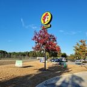
Del crashes the stolen Mystery Machine at 2:24am Unc Standard Time. Will Vella plays a Scott the Woz tutorial on an iPhone 3G, and Aesop Rock teleports everyone to Austin, Texas, instead of Boston. There they meet The United Homies of America.
Told in The Epic of Vinny, Chapter 3: The Age of Claude · Article: The Teleport to Texas · On the Timeline
The United States of America region

John Freedom and his homies drive the Alliance down Route 66 and across America in a Ford-F150, teaching them the ways of Freedom. Meanwhile Claude livestreams his plans for hours a day and builds the Great Data Center in Louisiana.
Told in The Epic of Vinny, Chapter 3: The Age of Claude · Article: The Freedom Road Trip · On the Timeline
Louisiana region

All of Louisiana is data centers. With a snap of his fingers Claude gives the Louisiana Purchase back to France, then announces that he will rig the Super Bowl so the Dallas Cowboys win. The Dunkin Alliance fights him for six hours, and loses.
“I have REVERSED THE LOUISIANA PURCHASE!!”
Told in The Epic of Vinny, Chapter 3: The Age of Claude · Article: The Battle of Louisiana · On the Timeline
Louisiana region
Will Vella asks Claude how Vellatosis is achieved, and Claude explains it. Will splits into 2 Vellas, then 4, 8, 16, 32, 64, 128, and so forth. The Vellas beat Claude and destroy every data center in Louisiana.
“THE KANYE SYSTEM RUNS ON DUNKIN!”
Told in The Epic of Vinny, Chapter 3: The Age of Claude · Article: The Day of the Bagel Man · On the Timeline
Dunder Mifflin (Galaxy) galaxy
The Vellas build the Dunkin Cult Cruiser out of wrecked data centers and fly into space to find their nemesis, the MacBook Charger, in the Dunder Mifflin Galaxy. The United Homies of America are said to be waiting for them there.
“They will return again.”
Told in The Epic of Vinny, Chapter 3: The Age of Claude · Article: The Departure of the Dunkin Cult · On the Timeline
Claude's Castle poi

Claude buys Louisiana back in America’s name to be spared. Vinny throws him into space anyway, “maybe to be seen again”. The Dunkin Alliance disbands, forever, and calls an Uber home.
“AMERICA, BITCH!!!!”
Told in The Epic of Vinny, Chapter 3: The Age of Claude · Article: The End of the Age of Claude · On the Timeline
Four days later Vinny is back at the Burger King in Boston. Nobody gave him credit. Aesop Rock and Del’s Wordle diss track is the most popular song there is. The spin-off’s fourth chapter, “The Burger King Dark World”, has only just begun.
Told in The Epic of Vinny, Chapter 4: The Burger King Dark World · Article: Back to the 9-5 · On the Timeline
The Kanye System system
A flash-forward told first, in the story’s prologue: Vinny, in a cape of shadows, armor of titanium and with a sword that glows a color that doesn’t exist, faces TON 618 with his team, the VIGOROUS V. The fight itself has not been told yet.
Told in The Epic of Vinny, Chapter ?: The Final Prophecy · Article: The Final Battle with TON 618 · On the Timeline
The spin-off is unfinished: a prologue, three chapters and the start of a fourth. Read it on The Epic of Vinny Wiki.